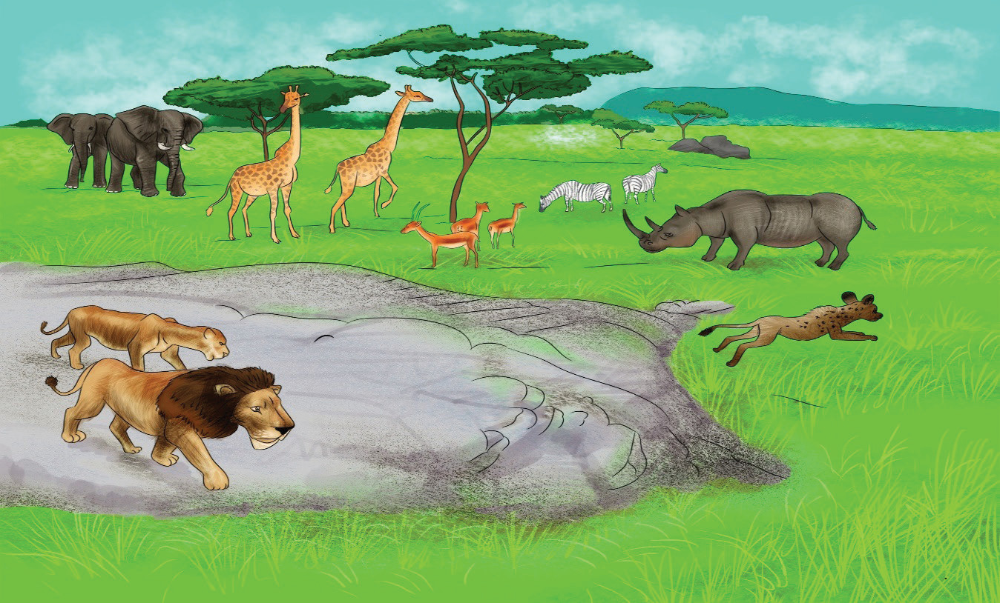

The following month, my mother took me to the Ngorongoro National Park. This was my opportunity to see the animals in their natural habitat. It took us just a few hours to reach the area from Arusha.
Upon arrival, we were welcomed by the game wardens. They guided us to where we could see all the animals. As we drove along the road, we saw lots of animals
grazing, such as antelopes, deer, elephants, zebras and rhinos. We also saw lions
stalking in the distance.

A few minutes later, we heard a loud noise. When we looked up, we saw a helicopter hovering over a large clump of trees. The game warden explained that the helicopter was on anti-poaching patrol. He said that poachers were bad people who killed ele- phants for their tusks and rhinos for their horns. Elephants and rhinos are in danger of becoming extinct because of such poachers.
In the afternoon, the wardens took us to a hotel in the park for lunch. Then, we left and spent the night at Karatu.
Questions
1. What did Juma use to see on television when he was young?
2. Why did the warden say that poachers are bad people?
3. Why does Juma believe that watching animals on television is not enough?
4. What would be the consequences if poaching is uncontrolled?
5. How are anti-poaching patrols being carried out, and what do you think about the strategy employed?